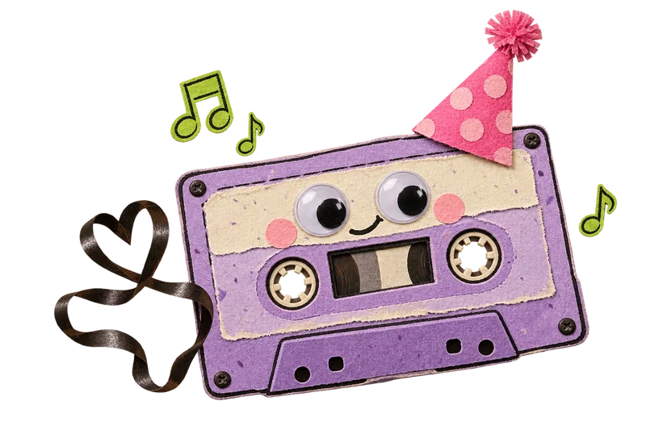
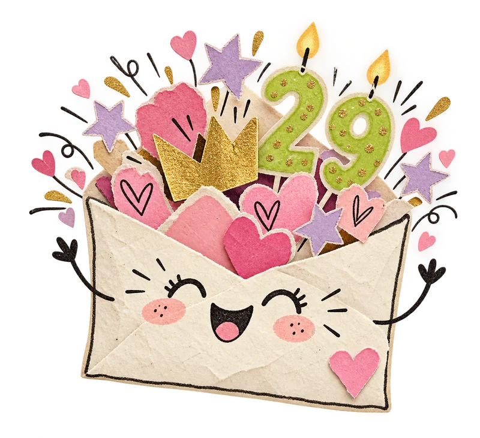
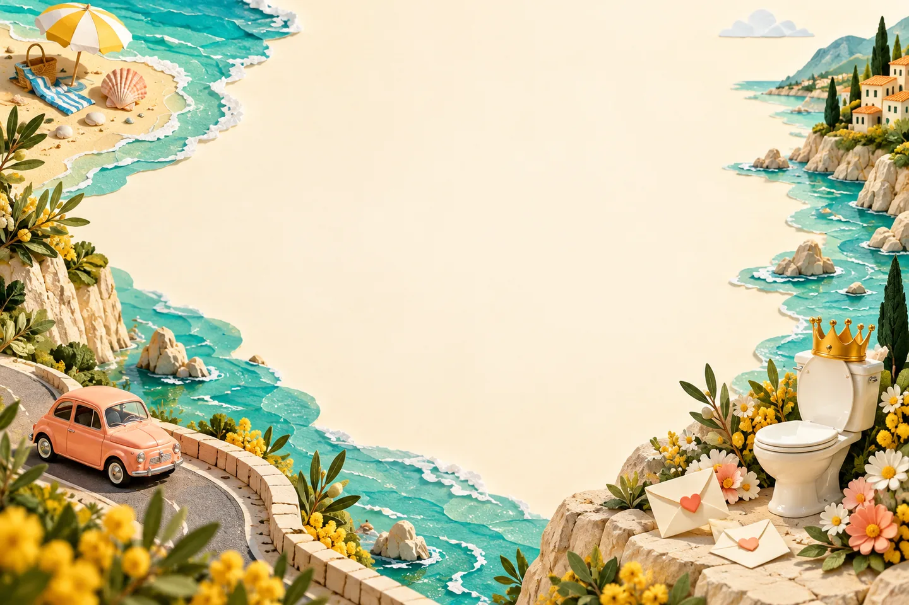
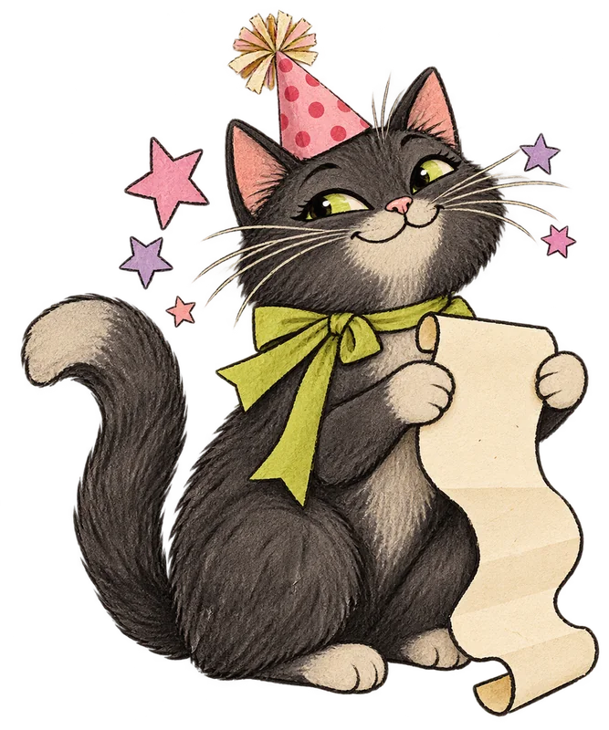

ДІМА,
ТИ ПРОСТО
ЛЕГЕНДА.і це ще м’яко сказано ↗
29 років. Мільйон історій.
І жодного шансу стати нудним.
Тут треба натискати!
П’ять маленьких пригод. Обирай будь-яку — усе найцікавіше ховається в кнопках.

Твій святковий саундтрек.
CRAZY · LE SSERAFIM · на повторі
Твій святковий саундтрек уже грає ↻
Пісня вже в сайті. Грає на повторі, поки ти роздивляєшся всі пригоди.

Дорослий?
За паспортом.
Дімо, у 29 вже можна мудро дивитися вдалину, казати «раніше було краще»… і через секунду показувати язика в камеру.
Бажаємо грошей стільки, щоб банківський застосунок питав: «Ти точно Діма, а не олігарх?» Здоров’я — щоб вистачало на всі пригоди. А щастя — такого, яке не вміщається навіть у найбільший келих.
Залишайся собою. Нам дуже подобається ця версія ♡Кадри, які
говорять самі.
33 фото. Жодної випадкової емоції.
Натисни на будь-яке — буде ближче.
Дімо, відкрий кожне фото!
Жарт уже чекає під кожним кадром. Відкривай, читай і гортай — ми все пам’ятаємо 😜
Оля. Любов.
І співучасть у приколах.
Оля — моя сестра. А ще людина, без якої цей архів був би значно серйознішим.
Коли Оля й Діма разом у кадрі, навіть камера розуміє: просто посміхнутися тут не вийде.
До особливого привітання ↓
Дімо, з твоїми 29!
Нехай у житті буде море щастя, поруч — Оля й твої люди, у кишені — гроші на пригоди, а в голові — лише ті геніальні ідеї, після яких не треба казати «тільки мамі не розказуй».
Любові тобі — без ліміту. Здоров’я — з довічною гарантією. А спільних приколів — стільки, щоб на тридцятиріччя довелося робити ще один сайт!
Море — за планом 🌊
Бажаємо частіше сидіти біля моря й думати «яке прекрасне життя», а не в туалеті й думати «навіщо я це з’їв».
Це треба
бачити в русі.
100% НАШ ГЕРОЙ
Тепер натисни ▶ — Діма в ефірі!
Обери будь-який із шести роликів. Фото показали лише половину історії.
Не вдалося відтворити відео. Завантажити файл
Тисни ▶ на відео. Звук і повний екран — у твоїх руках.
Дімо, ти
наш мем року.
Серйозність залиш при вході.
Тут усе схвалено двома експертами з приколів.
Дорослість знову відкладено
Дімі 29, але внутрішній підліток відмовився здавати ключі від пульта.
Сміятися дозволено. Перечитувати — теж.Випуск 01 / 16Що там
у твоїх 29?
Планети порадились. Кіт перевірив.
Прогноз готовий — витягни свій квиточок.

Натисни кнопку.
Майбутнє саме себе не напророкує.
Одне бажання.
Усі шанси.
Загадай те саме. Ми не підглядаємо.
Натисни на торт — і задуй свічки.
Загадай бажання й натисни на торт.
Свічки згаснуть. Побажання відкриється. Магія — за тобою.
Нехай здійсниться, Дімо! ♡
Нехай поруч завжди будуть твої люди, вдома — тепло, у голові — круті ідеї, а в житті — приводи усміхатись. Ми тебе дуже любимо. Навіть коли ти знову робиш оце обличчя на фото 😜